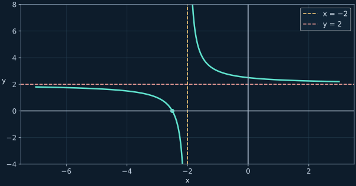
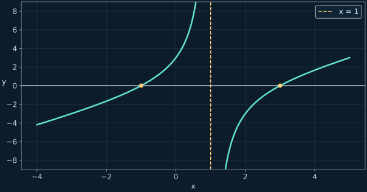

Рациональные функции: область определения и неравенства
Материал 27–28 октября: от гиперболы до дробей с модулем и составных выражений.
← Все конспектыИсточники и границы записи
Основа: последние 35 минут видео за 27 октября и первые 19 минут видео 28 октября 17:42. Для второй части использована совпадающая по содержанию расшифровка с именем 27 октября. Формулы сверены с доской.
1. Сначала область определения
Рациональная функция — отношение многочленов. Все нули знаменателя исключаются до любых сокращений. Нуль функции должен обнулять числитель и одновременно принадлежать области определения.
Пример с доски
Сокращение не возвращает исключённую точку
Оба квадратичных выражения положительны. Нулей нет. У сокращённой формулы есть значение при x=0, но исходная функция в этой точке не определена.
2. Гипербола и сдвиг
Для y=a/x оси являются асимптотами. Точка (u,v) с u≠0 даёт a=uv. В записи a/(x−h)+k асимптоты становятся x=h и y=k; это центр сдвига гиперболы.
Точка (3,2)
Выделяем постоянную часть

3. Рациональные уравнения
Уравнение можно умножать на выражение, которое не равно нулю на выбранной области определения. После решения проверяем каждый кандидат по исходным ограничениям.
Два примера занятия
4. Метод интервалов
Переносим всё влево, приводим к одной дроби, раскладываем на множители. На оси отмечаем нули числителя и знаменателя. Знак проверяем в каждом промежутке; при чётной кратности знак не меняется. Знаменатель никогда не разрешает включить свою нулевую точку.
Неравенство из записи

Не умножаем на x без учёта знака
Здесь равенство: умножение на ненулевой x допустимо. В неравенстве при x<0 знак пришлось бы менять.
5. Деление дробей и три ограничения
Упростить и сохранить область определения
Нужны x≠−3 и x≠−2 для существования дробей, а также x≠3: делитель не может быть нулём.
6. Модуль в знаменателе
2/|3x−1|>1
На области определения знаменатель положителен. Умножаем без смены знака, но исключённую точку сохраняем.
7. Подстановка иррационального аргумента
f(x)=x²/(2x−2)
Числитель равен знаменателю с противоположным знаком. Это проще, чем домножение на сопряжённое выражение.
8. f(x+1) — это подстановка, а не f(x)+1
Составное неравенство
Числитель положителен для допустимого x. Значит, знаменатель должен быть положительным: x<−1 или x>3. Условие x≠0 добавлять не нужно: исходное выражение использует аргументы x+1 и x−1, а не x.
Теперь попробуй самостоятельно
Дополнительные задачи находятся только во вкладке «Тренировка»: по 10 на каждый тип, с раскрываемыми ответами и разбором.
Открыть тренировку →